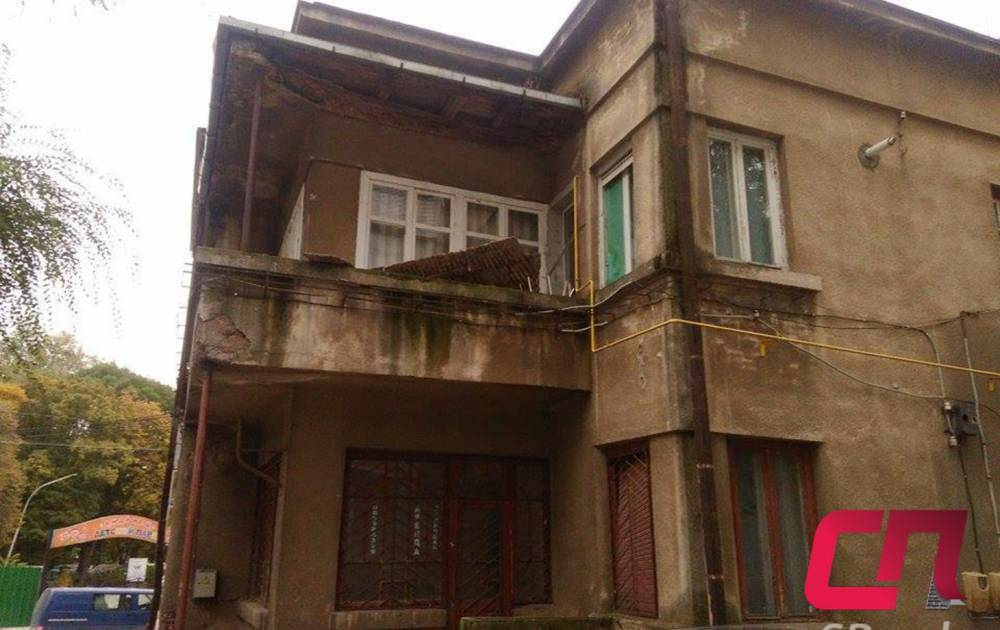
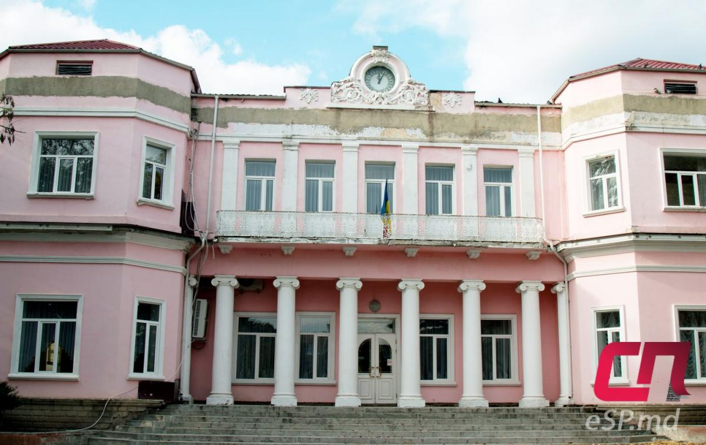

Интерестные места
Дом по ул. Хотинской, 26.
Здание находится на углу улиц Хотинской и Садовяну рядом с Армянской церковью и парком «Андриеш». Дом был построен в модернистском стиле в 1934 году архитектором Этти-Розой Спирер, которая является автором нескольких бельцких зданий с уникальной архитектурой. Изначально здание состояло из четырёх квартир и студии. До войны особняк принадлежал семье Флорин. После 1944 года в нём жило несколько семей. Несколько лет назад часть дома была перестроена, и изначальный вид не сохранён. Кроме того, половина строения окрашена в зелёный и фиолетовый цвета, что не соответствует его «родному» цвету. Также большую часть фасада занимают рекламные баннеры, хотя по Закону о рекламе запрещается размещать наружную рекламу в пределах охранных зон памятников архитектуры. Сейчас, по данным кадастра, здание состоит из шести квартир, четыре из которых принадлежат одной семье. Два помещения имеют статус нежилых. Буквально накануне выхода материала, в воскресенье, 9 октября, обвалилась часть бетонного козырька над одним из балконов этого дома.
Здание загса
Точная дата постройки особняка неизвестна. Первое время строение было одноэтажным. После смерти главы семейства наследники выставили его на продажу. В 1914 году его выкупили для нужд Бельцкого земства, в 20–30 гг. в нём стала размещаться префектура Бельцкого уезда. Для этих целей был достроен второй этаж, установлены шесть колонн, поддерживающих балкон, и др. Проект изменений подготовила архитектор Этте-Роза Спирер. В послевоенные годы в этом здании размещался Дворец пионеров. Сейчас здесь расположен Дворец бракосочетаний.